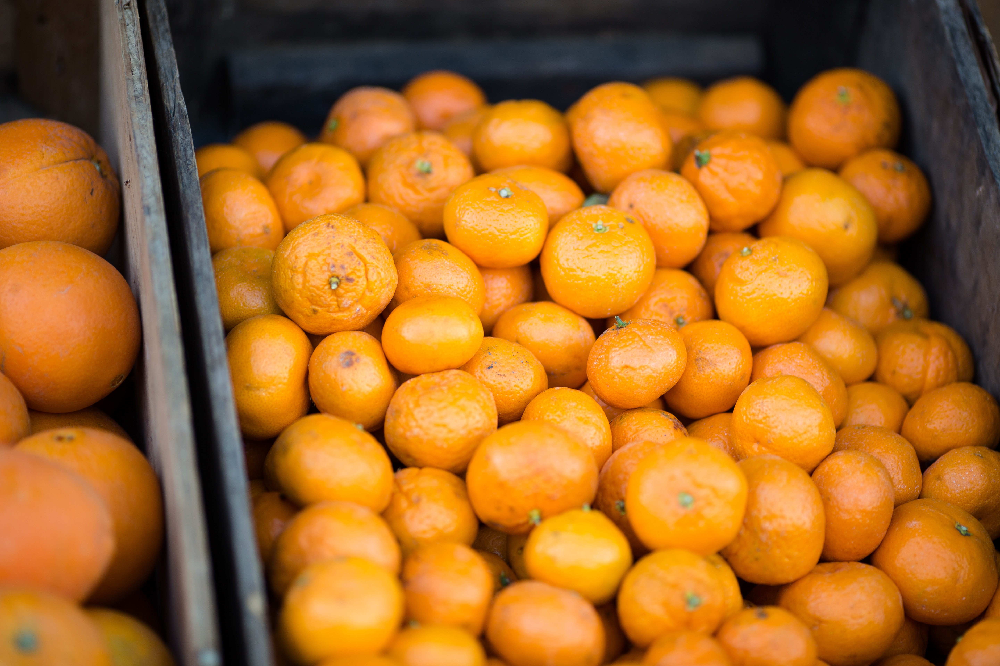

민영이는 낑깡을 좋아한다.
'낑깡'이 무엇인지 난 몰랐다면 민영이를 모르고 지냈을 수도?
그나저나 낑깡을 요즘엔 안먹는것 같다.
사줘야겠당..

PS.이 친구가 궁금하다면 클릭해보시지.
아무말 대잔치
낑깡은 왜 껍질채로 먹나?
오렌지 밀감 낑깡은 한 가족인가?
민영이가 요즘 참 피곤해 보이는군
요즘 두통이 나는데 도통 이유를 모루겠군
껍질 다 까여진 밀감이 쌓여있다면 40개는 먹을 수 있을것 같애
* font - 색을 입힐 수 있음
- color = "red" 라는 식으로 색 가능
- HTML에 디자인 관련 tag를 추가하는 방법은 CSS에 비해 쉽지만 여러가지 한계가 있음
- 예를 들어서, font 태그를 추가하거나 수정할 때 중복적인 코드, 작업으로 유지보수에 어려움
* head 태그 안의 style - 사용 중인 태그에 속해있는 문구를 한방에 컬러를 변경할 수 있음
- font태그에 비해서 유지보수에 용이, 효율적임
- 같은 태그를 사용하더라도 디자인을 다르게 하고 싶다면 어떻게 해야 할려나..
- 이 디자인을 누구에게 줄것인지 선택한다라는 점에서 선택자(Selector)라고 불림
- 선택자 내부(중괄호로 묶인 곳)는 선언, 효과(Declaration)라고 불림
* 속성의 style - 문구에 효과를 줄 수 있음
- head 태그 안의 style과는 다르게 특정 누구의 디자인이라고 할 수 있음
* 속성 및 효과 - color : 컬러를 넣음
- text-decoration : 텍스트의 밑줄
- font-size : 텍스트의 사이즈
- text-align : 텍스트의 정렬
- border-width : 테두리의 두께
- border-color : 테두리의 색
- border-style : 테두리의 스타일
- 위에 3가지 효과를 보면 border가 중복이 되는데 이것은 border: 10px solid red; 처럼 명시 가능
- padding : 컨텐트와 테두리 사이의 간격
- margin : 테두리와 테두리 사이의 간격
- 그 밖에 에디터의 자동완성, 검색으로 알아볼 것!
* 선택자 - 태그에 대해서 같은 속성을 갖고 있다면 h1, a {...} 처럼 중복에 대해 대처 가능
- 링크에 대해서 현재 머물고 있는 링크와 방문했었던 링크를 색으로 비교하고자 한다.
- 기존에 속성의 style로 color를 주는 작업을 한다면 중복이라는 문제가 발생
- 따라서, class라는 속성을 이용해서 선택자들을 태그별로 나누는게 아니라 하나의 그룹으로 나눌 수 있게 되었음
- class의 값으로 여러 클래스를 가질 수 있는데 띄어쓰기 하나로 구분을 하게 된다.
- head태그에 class를 명시할 때에는 .classNM 형식으로 표시하고
- 만약 여러 class에 속해있는 상황에서 head 태그에 명시되어있는 class 중 나중에 명시된것이 적용이 된다.
- 하지만 class가 아닌 id선택자를 사용하게 되었을 때는 순서와 상관없이 id선택자가 적용이 된다.
- id 선택자는 이 웹페이지에서 단, 하나만 나와야 한다.
- 결론적으로는 우선순위는 id > class > tag (즉, 구체적인것이 우선순위가 더 높다!!)
- 부모 자식의 관계를 선택자 선언에도 쓰일 수 있음 #grid ol {...} 처럼
* BOX 모델
* block level element - 컨텐트 영역이 화면을 가득 채움
- display:inline 속성을 통해 inline으로도 가능
* inline element - 컨텐트 영역이 내용물에 맞추어 나타냄
- display:block 속성을 통해 block으로도 가능
* 반응형 디자인 - 화면의 크기에 따라서 웹 페이지의 각 요소들이 반응해서 동작하게 된다.
- @media(...)를 통해서 원하는대로 가능!
* Media Query - 화면의 특성에 따라서 어떠한 조건을 만족할 때만 CSS의 내용이 동작.
* CSS 코드의 재사용성 - style 태그를 다른 html파일에도 적용할 수 있다.
- 하지만 각각의 html파일에서 style 태그의 내용이 중복된다면 이거 또한 문제가 될 수 있다.
- style태그의 내용을 style.css 라는 파일에 담아내고 각각의 html파일에서는 link 태그를 이용해 이 스타일을 다운받아 적용할 수 있음
- 한번 페이지를 방문해서 style.css 파일을 다운받았다면 다음부터 방문할 때 cache에 저장된 style.css를 빠르고 불러와 읽어서 네트워크 트래픽문제도XXX